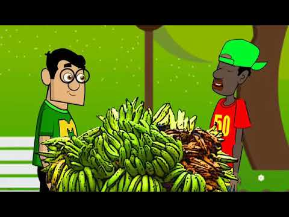

Ya 17 años y aún no se si eres Dwayne Jhonson o solo la persona más importante para mí. Aún recuerdo cada pañal que te cambie, se los daba a tu tío Johander para que los botara... Eso espero decirle a mis hijos y quiero que tu estés presente en cada momento... Por que eres simplemente impresionante, tu mamá y tu hermana estarían orgullosos de lo que has hecho, estoy completamente seguro de eso... Pero siempre que cierres los ojos imaginate que ese es mi mundo sin ti, y supongo que así es tu mundo sin ellas, pero sé que estarían felices de ti

Ese eres tú, cuando sonríes te ves exactamente igual, una sonrisa que puede hacer llegar a cambiar la mente de todos los que están a tu alrededor; cada mente es un mundo, cada persona es un planeta, pero tú puedes entrar a esos planetas y hacer crecer flores de la nada, haces que los demás quieran sonreír también, en su mundo... Lo que quiero decir es que, nunca dejes de sonreír, nunca lo hagas, eres el tipo de personas que puede cambiar la mente de otros, que puede hacer cambiar sus sentimientos y hacerlos sentirse invencibles, eres el tipo de hombre que puede mover una roca si se enfoca en ello, nunca te rindes, eres terco como una mula, eres tan terco como un niño en sabana grande cuando no le brindan una hamburguesa a 1$... Ahora que lo pienso antes peleamos en la calle por que no nos compraban un juguete o una chucheria y siempre decían que nunca tenían rial y nosotros decíamos "Claro que no, ustedes dicen eso y tienen rial ahí", y terminaban comprandonos nuestra vaina jajajaja, en un futuro nuestros hijos nos fastidiaran por que no le compramos una chicha en sabana grande jkadjkadkjsa
Tú deberías ser el nuevo Capitan América, y no ese Falcón, burde mariko, vea'?, ajkdakjsdaksjkadjk. ¿Recuerdas cuando jugabamos Bomberman en el DS?, ¿o cuando jugabamos Foto Frenzy?, ¿o haciendo animaciones en Flipnote Studio (el de la ranita xd)?, ¿o cuando jugabamos matándonos en Super Mario Bros. del DS?, todas esas acciones demuestran que deberías de ser el nuevo Cpaitan América jkadjks, ¿no lo crees? xd, obvio que sí... Pero lo que te quiero decir, es que aunque no seas el verdadero Capitan América siempre seras mi Capitan América, siempre seras el rojo de los Power Rangers, siempre seras mi hermano aunque crezcamos, siempre seras mi 0...
¡Felices 17 bro!, espero la pases muy bien y que esa party que vas a hacer vomites y te rasques como es, si o no ajkdajkdjkadkja... Te amo bro, te amo y mucho, y hay una canción que si tuviera un padre quisiera que me dedicara y te la voy a poner a continuación y quiero que la escuches mientras lees todo esto, por favor...
Ahora, ¿ya la pusiste?, espero que la hayas puesto o si no te voy a joder y te voy a meter tu coñazo cuando te vea jkadjkas... Bro, vas a lograr grandes cosas, y de eso estoy seguro... Estoy muy seguro de ello de verdad... Estoy seguro de que seras el mejor beisbolista que esta tierra pudiera tener, estoy seguro de que seras el mejor padre que los vecinos te envidiarian por completo jajaja, estoy seguro de que también seras un estupendo novio para ella bro, para esa chica que te robo el corazón por más de dos años y aún lo sigue haciendo

Espero seas muy feliz con lo que sea que quieres hacer en la vida, recuerda que lo más importante es ser feliz, no importa como, pero si no estas siendo tú, ¿entonces qué coño estas haciendo?, si no estas siendo tu mismo, si no estas dando todo de ti, ¿entonces que coño estas haciendo?, siempre he pensado en ti como un hermano, siempre ha sido así, y siempre sera así... Alguna vez cuando seamos grandes te haré la casa que siempre cuentas cuando preguntamos "¿y como quieres tu casa?" jakdjkas, siempre la cambias, pero algún día te hare todas esas... Algún día serás el más grande vendedor de platano de la vega jkadjks

Gracias por cada momento a tu lado, gracias por cada risa, por cada aliento, por cada abrazo, por cada besito (ay mariquitooOooooOo jakdakjdjkadjka), gracias por hacerme sentir que realmente no estaba solo en el mundo, lo mejor que puedes hacer sentir a una persona es eso, nacemos solos en el mundo, pero si podemos hacer sentir a los demás que realmente no lo estan, vele un millon, y yo te amo 3 millones... Te mereces muchas cosas más de las que te puedo dar, y se que esto no es mucho pero espero te guste... Nunca he sido el mejor hermano que pudieras tener, de hecho no soy muy bueno en muchas cosas, soy un desastre en muchas, y tú sabes en cada una que soy malo, y aún así me apoyas, me gritas cuando me equivoco y estas allí para cuando logro algo, el por qué sigues allí es su problema señor Stark, pero le contare por que yo sigo allí
"Yo soy Iron Man", todo empezo en ese entonces, ¿no?... Cuando aún eramos niños y solo jugabamos con nuestros soldados (ayvale JAKDKAJDjkADJA), jugabamos rompecabezas, pintabamos libros de dibujos, nos bañabamos juntos (ayvale JAKDKADKAJSDJKA), jugabamos en el DS juntos, escuchabamos ya sabes cual canción, la canción más triste del mundo pero que escuchabamos en ese PXP en el que también tenia la película de "Liberen a Willy", que malditasea mientras escribía esto me dieron ganas de ver esa pelicula contigo otra vez, cuando estemos en tu casa, ¿la veremos?... Ah cierto, ¿qué decía? ajkdajkda, cierto cierto, esa canción que cada vez que la escucho me dan ganas de llorar, enserio no quiero que te vayas de mi lado, no quiero que esto nunca termine, eres mi hermano bro, eres el compañero que ha estado conmigo siempre, ya sEEEeeeEE jkadjkada, nosotros somos como Luca y Alberto ajdajdks
Hay que comenzar desde el principio, ¿no?... "¿Qué fue lo que me hiciste?"... "Te hice"... "Lo que hice fue salvar tu vida"... "Escucha, eso que viste es tu legado Stark"... Recordar aquellos martillazos en aquel yunque para formar la armadura que protegeria el mundo, es impensable, es impensable que Tony Stark aun sigue vivo, salvo que hubiera una misión, el cree en su corazón que es lo correcto, salvar vidas, ser Iron Man... Y yo quiero que creas en tu corazón que esta bien ser Cosculluela, tal vez Travis Scott, o tal vez Bad Bunny, esta bien ser quien quieras ser, mientras sientas en tu corazón que es lo correcto... Cuando no lo creas solo recuerda que para una persona, eres su 0
A veces pienso en todas las cosas que hicieron los vengadores, digo, parar traficantes de armas todo el día... Hasta que un día solo pasa algo que los hace unirse, y los hace escuchar la canción que seguramente esta por terminar cuando estes leyendo estas palabras, la canción que te dije que pusieras de fondo seguramente ya descubriste de donde es... Para mi, siempre seras como el hijo que nunca tuve... ¿Recuerdas ese momento en el que se escucho esa canción al final de Guardianes de la Galaxia 2?, mientras todos le rinden tributo al sacrificio de Yondu?...
"Yo soy Iron Man"... así termina, y así empieza, ¿no?, pues terminara así... Pero antes de eso, solo te digo que espero que la pases bien, y que gracias por todo, enserio gracias por todo, por todo, no tengo manera de agradecerte nada de lo que has hecho por mi, pero al menos quiero dedicarte algunas palabras... Gracias por ver cada una de las peliculas de Marvel conmigo, gracias por ser mi compañero del alma, gracias por estar siempre allí, gracias por ser el mejor hombre araña del mundo... Y como te dije al inicio, nunca dejes de sonreir, si no sonries con lo que estas haciendo, ¿qué coño estas haciendo?, la vida es muy corta como para no ser feliz, trata de serlo, cueste lo que cueste, por qué, ¿sabes algo?, yo tratare de hacerte feliz... Gracias por jugar Max Steel conmigo, y gracias por dormir conmigo cada noche (ayvale xd)... Gracias por enseñarme a vivir...
¿Sabes?, tengo una teoría confirmada... Se puede vivir la vida en un año, Hail Hydra... Te dije que así comenzaría y así terminaria... Ve este video, porfavor...